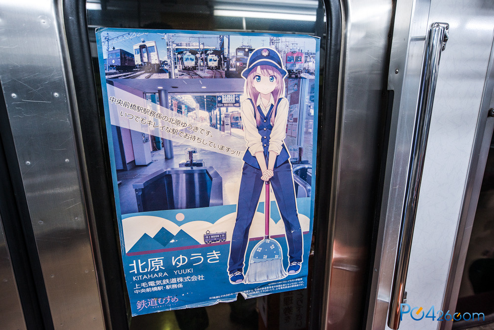

我筹备该博客已经有一段时间了.
从2017-4-5日在新公司入职开始,我就考虑整一个博客.
当初想创立这一个博客的理由是因为之前自己学到的东西,记在文档里很少去翻,去问,也没花多长时间去理解,更不能把自己学到的分享出去.
虽然这个理由很不正经的,不过它轻松的阻挡了我学习研究技术的一个阻碍.所以我决定还是将博客一点一点的写出来.把自己所得到、理解到的知识,经验和见解.
当然,现在已经是10月4日了.可以说从外人的角度看来我是极其失败的,做事效率极低的.
转眼就过了6个月,云服务器还是7月份组下的.结果到是现在还没有上线.当然,这一切都是有理由的,下面我详细说我做这份孤独的工作是遇到了些什么样的问题,即我目前的解决方案[...]
